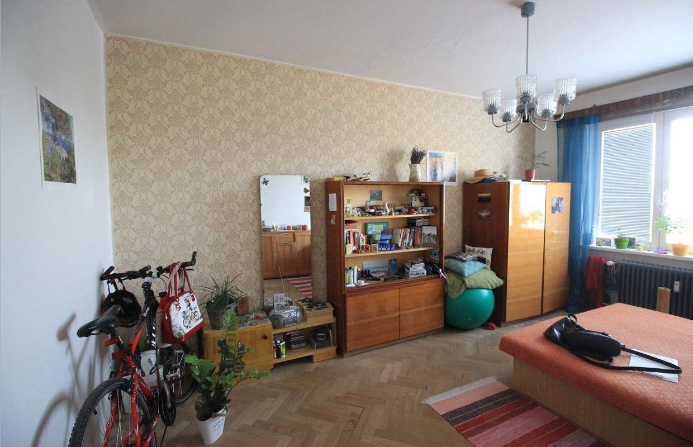
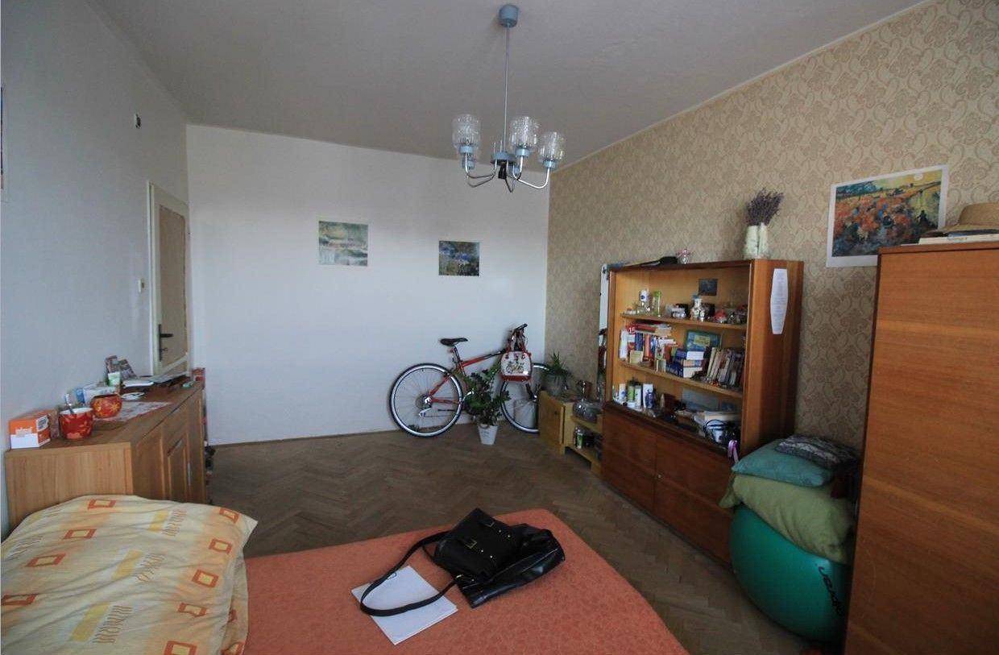
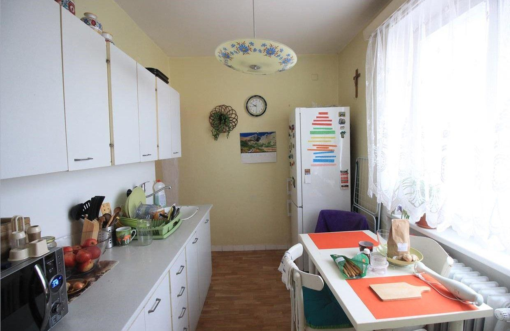
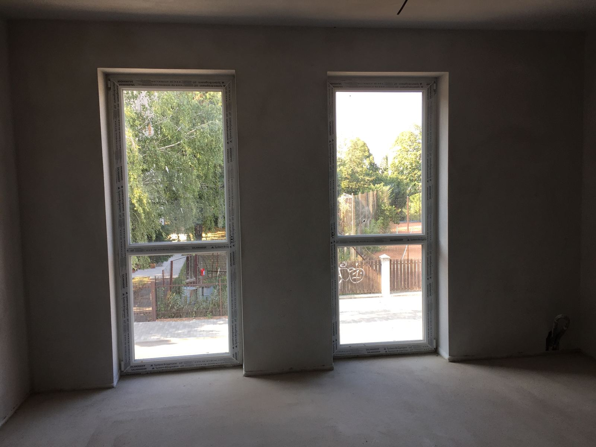
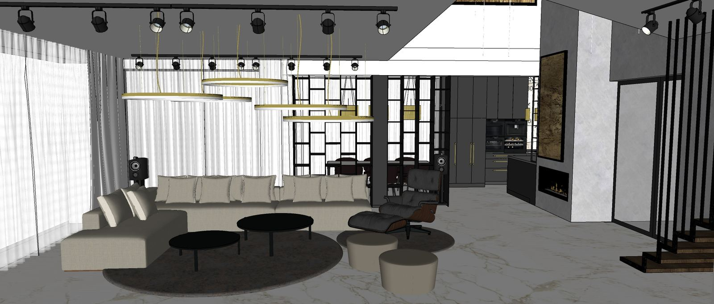
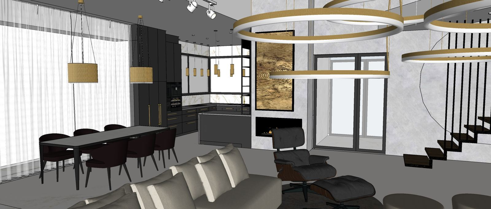
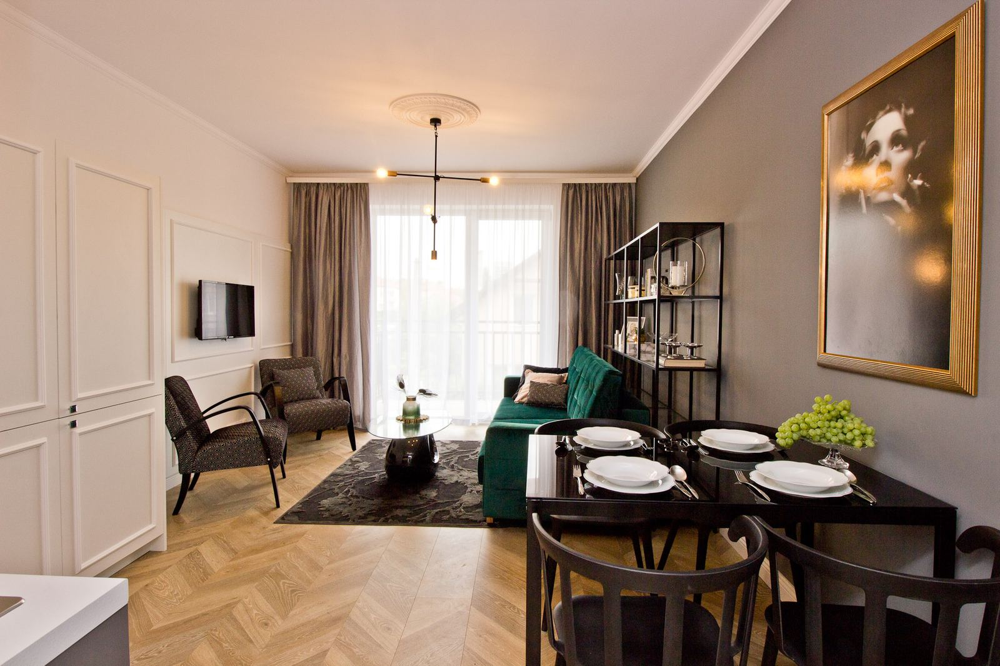

Domov, ktorý konečne funguje a vyzerá ako ty.
Som Miriam. Už 15+ rokov pomáham ženám v Trnave a okolí premeniť priestor, v ktorom sa „len býva“, na priestor, ktorý dáva zmysel, bez drahých chýb a bez toho, aby ti niekto nanútil cudzí štýl.

Máš pekné veci, no domov to stále nie je.
Nie je to tvoja chyba. Len ti doteraz nikto neukázal, kde robíš drahé chyby, čo máš prestať kupovať a ako priestor poskladať tak, aby fungoval pre tvoj reálny život.

Pred
Pred
Pred Po
Po
Garancia zhody štýlu
V konceptovej fáze upravujeme návrh, kým nebudeš spokojná so smerom. V praxi to znamená 2 až 3 kolá. Do finálneho spracovania ide až to, čo spolu odsúhlasíme.
Garancia funkčného priestoru
Ak po realizácii niečo nesedí s tým, čo sme si nadefinovali, do 30 dní od odovzdania to doladím bez doplatku.
Ako to celé prebieha

Diagnostika a ponuka (249 €)
Stretneme sa u teba, pomenujeme problémy a priority. Do 5 dní dostaneš cenovú ponuku.

Návrh
Po zaplatení zálohy priestor zameriam a pripravím dispozície a vizualizácie. Prvý hrubý koncept vidíš do 10 až 14 dní od zamerania.

DESIGN BOOK a výkresy
Dostaneš presný nákupný zoznam a podklady pre remeselníkov.

Realizácia (voliteľne)
Dohliadam, objednávam, koordinujem. Ty sa nasťahuješ do hotového.
Reálne premeny
Klik na dlaždicu otvorí fotky z realizácie a recenziu klientov, ktorí v tom priestore bývajú alebo pracujú.
Bývanie
9 realizáciíKomerčné priestory
2 realizácieČo o mne hovoria moji zákazníci
„Chcel som niečo s charakterom, moderné art deco, ale vkusne. Spravila presne to, čo som mal v hlave. Len ja som to nevedel takto pomenovať.“
„Vždy keď prídem k mame do bytu, mám radosť z výsledku. Je to pekný, útulný, moderný bytík, kde sa mama cíti dobre.“
„Perfektne zladila starý nábytok s novým. Napriek tomu, že sme sa presťahovali z domu do paneláku, cítime sa v ňom oveľa lepšie.“
„Náš byt má smer, charakter a jednoliaty štýl. Kvôli podlahovej krytine sme obvolali pol krajiny, aby mi ju nakoniec našla.“
„Dizajnérka sa nebála farieb. Pôvodne som sa tmavohnedej steny bál, ale nakoniec je to super.“
„Byt je vzdušný, farebne a dizajnovo lahodiaci oku i duši. Splnenie požiadaviek nad moje očakávania.“
„Môj prvý byt. Návrh aj realizáciu som zveril do rúk dizajnérky a neľutujem ani euro.“
„Každý máme nejaký vkus, ale len dizajnér vie, ako z toho urobiť čarovné miesto pre oddych.“
„Byt máme zariadený nadštandardne. Podľa realitnej maklérky patrí k najkrajším v komplexe.“
„Cítila som sa ako u psychologičky pre priestor. Máš neskutočný cit, určite odporúčam.“
Navrhujem aj komerčné priestory
„Jej kreativita, profesionálny prístup a rýchla reakcia ma naozaj ohromili. Určite ju odporúčam.“
„Dostávame obdiv od zákazníkov. Vracajú sa nielen kvôli našej kuchyni, ale aj kvôli pôsobivému interiéru.“

Kto som
Som Miriam Czompoly. Od roku 2010 navrhujem interiéry s dôrazom na to, aby odrážali teba, tvoj životný štýl, osobnosť a to, ako reálne žiješ. Neponúkam len pekné obrázky. Ukážem ti, kde robíš chyby, čo máš prestať kupovať a ako priestor poskladať tak, aby dával zmysel. Idem priamo k problému, bez zbytočností, aby si sa konečne vedela rozhodnúť.
Miriam
Ešte nie si pripravená na spoluprácu?
Stiahni si zdarma 5 najdrahších chýb, ktoré ľudia robia pri zariaďovaní domova, a ako sa im vyhnúť ešte predtým, než minieš prvé euro.
Ešte váhaš? Toto sa pýtajú najčastejšie.
Aby si dostala skutočnú hodnotu, nie predajný hovor. Suma sa ti navyše odpočíta z projektu.
Nie. Návrh je na 100 % o tebe, garantujem to.
Prvý koncept vidíš do 7 dní od diagnostiky. Rozsah celého projektu si dohodneme dopredu.
Pre kvalitu beriem iba 3 až 4 kompletné projekty mesačne.
Poďme z tvojho priestoru spraviť domov.
Chcem diagnostikuBeriem iba 3 až 4 projekty mesačne.